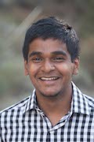

We are an open-minded group of individuals who are passionate about finding solutions in rural India and improving peoples' lives. While our officers put in a lot of effort, it's not an easy task, and we appreciate any and all help from the general members. If you would like to become a general member, please contact us to become involved with project development, hosting large-scale events, and meeting like-minded people!


President - Radhika Gulhar
Radhika Gulhar is a third-year Human Biology major from San Ramon, CA. She plans to attend medical school and pursue the path of plastic surgery in the coming future. Aside form Project RISHI Radhika spends her time practicing with the UCSD Women’s Crew Team, researching on cancer therapy at Bennet Laboratories, and planning events for the Health Medical Professions Preparation Program (HMP3) at UCSD. In her free time she likes shopping, going out with friends, listening to music, cooking, and watching movies.

Vice President - Ahish Chitneni
Ahish Chitneni is from Sunnyvale, CA. He is majoring in Physiology & Neuroscience in Revelle college and this is his third year being a part of Project RISHI. His future plans include having a career in the healthcare field and hopefully applying what he learns here at RISHI there. During his free time he likes to watch and play basketball (Go Lakers!) and listen to music!

Secretary - Ipsita Praharaj
Ipsita Praharaj is a second year NanoEngineering major from San Ramon, CA. In the future, she hopes to specialize in cardiovascular bioengineering and work in the biotechnology industry. Aside from Project RISHI, Ipsita is on the outreach committee of UCSD's Biomedical Engineering Society. She loves to dance, read and hang out with friends in her free time.

Project Planning Chair - Rushil Patel
Rushil Patel is currently a second-year studying Physiology & Neuroscience. He was born and raised in San Jose, California and hopes to eventually pursue a career in medicine. Aside from Project RISHI, Rushil likes to get involved in different leadership organizations like the Associated Students at UCSD. During his free time, he likes to hang out with friends, play video games, and meet new people.

Finance Chair - Samkit Jain
Samkit Jain is a fourth-year, Sixth College student pursuing a degree in Biochemistry & Cell Biology. After his undergraduate career he aspires to become either an Anesthesiologist or an Internist, specializing in pulmonology. He is excited to be a part of Project RISHI this year and hopes to be able to help more people through the organization. Additionally, he is also part of the UCSD Greek life as a member of the Sigma Nu Kappa Rho Chapter and enjoys spending his extra time at the gym, with close friends, and studying.

Fundraising Chair - Vaish Sridhar
Vaish Sridhar is a third-year undergraduate at UC San Diego, pursuing a degree in Physiology and Neuroscience. As fundraising chair, she hopes to aid this Project RISHI chapter in raising more money to further help the community in Anandwan. She grew up in Pleasanton, CA and enjoys eating waffles, playing softball, dancing, helping kids, and being silly. Vaish is also involved in the undergraduate research journal Saltman Quarterly and is a research assistant at Sanford Consortium.

Sponsorship Chair - Shivani Patel
I'm Shivani Patel and am from Bakersfield, CA. I'm currently a sophomore at UCSD and this is my second year being a part of Project Rishi! I'm a human biology major in Revelle College and hope to have a career in the medical field some day. In my free time I love to dance and read. I'm also slightly a shopaholic and it’s a serious problem!

External Affairs - Arun Singh
Arun Singh is from Bakersfield, CA and is majoring in General Biology at ERC. In the future, he hopes to pursue a career in medicine. Outside of Project RISHI, he likes to meet people, go out with friends, watch movies, and watch or play sports—basketball, football, and tennis.

Marketing Chair - Rohan Bhow
Rohan Bhow is a second year student in Roosevelt College here at UCSD. Rohan grew up in Minnesota and went to highschool in Bangalore, India. He hopes to pursue a career in health care and wants to get involved in global health matters regarding less developed countries. He loves traveling and learning about different cultures. In his free time, Rohan likes to hike, bicycle, and cook!

Webmaster - Sonal Prasad
Sonal Prasad is majoring in Computer Science as a third-year student at UCSD. During her earlier years, she lived in India and Canada, but mostly grew up in Palo Alto, California. She hopes to pursue a career in computational biology, and also wants to play a role in improving social and health conditions in rural parts of the world. When she has free time, she likes to run, take pictures, bake, read, and hang out with friends!

Historian - Raj Patel
Raj Patel is a fourth year Human Biology major here at UCSD. He grew up in Moorpark, California and has always called SoCal his home. He joined Project Rishi board in hopes of having a positive impact in the less fortunate areas of India. He spends a majority of his spare time in the gym, on the basketball court, and hopes to learn how to surf sometime before he has to leave the beautiful San Diego beaches. Someday he hopes to practice and do research as an Endocrinologist.

Travel Coordinator - Vaishali Talwar
I am a 3rd year general biology major, from New Delhi, India. I hope to pursue research in the field of genetics in the future, as well as start affordable diagnostic clinics in India. Aside from being part of Project Rishi, I am also a volunteer at the Rady's Childrens' Hospital. I love reading, shopping, hanging out with friends and taking questionably long naps in my free time.

Newsletter Committee - Rohun Iyer
Rohun Iyer is a 2nd year undergraduate pursuing a degree in Mathematics and Computer Science. He was born in Houston, Texas and grew up in Los Alamos, New Mexico. He hopes to pursue a career in data analysis. He joined Project RISHI to have a positive impact on social and health conditions in rural India. In his free time, Rohun likes to play soccer, bike or read just about anything!

Retreat Chair - Rifat Tuly
Rifat Tuly is from Los Angeles, CA. She is a 3rd year majoring in Physiology & Neuroscience in Marshall college. Her future plan involves working in the healthcare field as well as helping reduce global poverty and participating in Doctors without Borders in the near future. She hopes to use the experiences she learns in Project RISHI in order to help accomplish her future ventures. During her free time, she loves watching TV serials (from all over the world), listening to music, sleeping, eating, and goofing off with her friends.

Retreat Chair - Nabila Tabassum
Nabila Tabassum is a third year undergraduate student at UC San Diego, and currently pursuing her major in Biochemistry and Cell biology. She is from Los Angeles, California. In her role as Project RISHI’s Retreat Chair, she wants to help the community and the children who are disadvantaged and compromised. At her free time, Nabila likes to spend time with her family and friends. She also likes to travel, eat and volunteer.